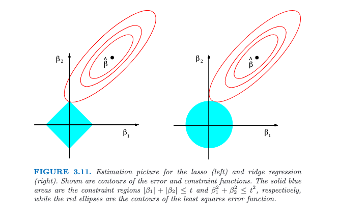
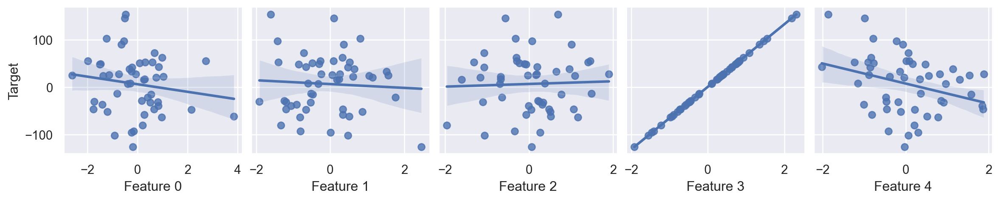
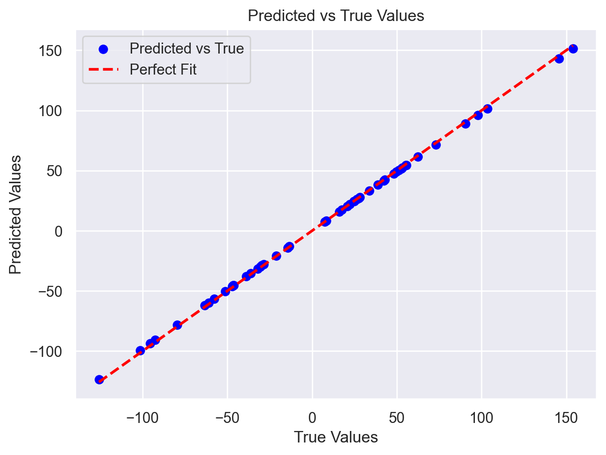
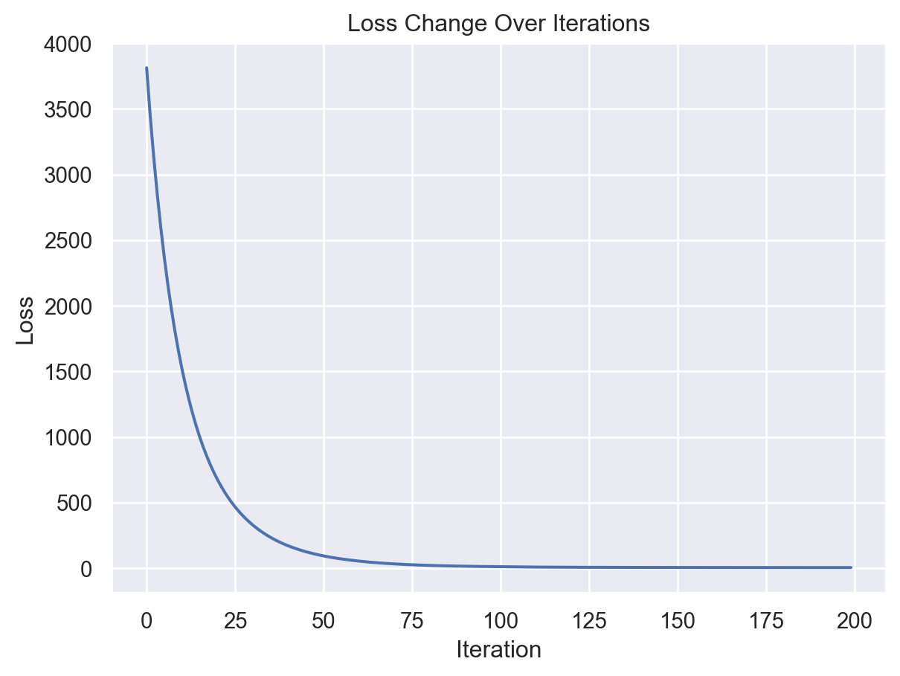
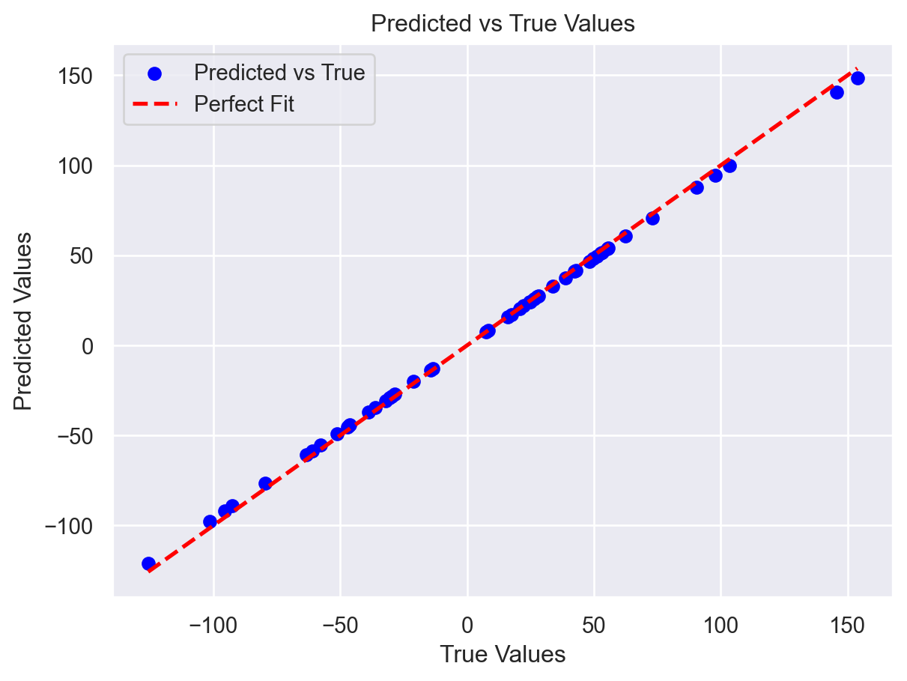

from sklearn.metrics import mean_squared_error
class LinearRegressionNaiveL1:
def __init__(self, learning_rate, epochs, alpha, n_features):
self.learning_rate = learning_rate
self.epochs = epochs
self.alpha = alpha # regularization parameter
# We can init weights with zeros, because we calculated the gradient analytically
self.weights = np.zeros((n_features,1))
self.bias = 0
self.loss_history = []
def fit(self, X, y):
n_samples, n_features = X.shape
for _ in range(self.epochs):
y_pred = self.predict(X)
# Compute gradients
d_l1 = self.alpha * np.sign(self.weights)
d_weights = (1/(2*n_samples)) * (X.T @ (y_pred - y))
d_bias = (1/(2*n_samples)) * np.sum(y_pred - y)
# Update weights and bias
self.weights -= self.learning_rate * (d_weights + d_l1)
self.bias -= self.learning_rate * d_bias
mse = mean_squared_error(y, y_pred)
self.loss_history.append(mse)
def predict(self, X):
return X @ self.weights + self.bias
n_samples, n_features = X.shape
learning_rate = 0.1
epochs = 200
alpha = 0.5
model = LinearRegressionNaiveL1(learning_rate=learning_rate, epochs=epochs, alpha=alpha, n_features=n_features)
model.fit(X, y)Введение
L1 регуляризация умеет отбирать признаки. Это ее свойство почти повсеместно объясняют с помощью статистических рассуждений и варианта вот этой иллюстрации от создателей алгоритма:

Разглядывая эту картинку, у меня и правда возникло смутное чувство интуитивного понимания. Но вот когда я попытался объяснить суть алголритма знакомому, эта интуиция куда-то улетучилась.
Предлагаю вместе со мной разобраться, как L1 действительно отбирает признаки.
Для наглядности мы будем регуляризовывать линейную регрессию со среднеквадратичной ошибкой (lasso regression).
Мои рассуждения можно пропустить и сразу прыгнуть до ключевой идеи.
Определяем L1
Итак, чтобы регуляризовать линейную регрессию, мы просто добавляем к ее ошибке штраф, который зависит от абсолютного размера весов:
Для нахождения оптимальных весов нам, как обычно, потребуются градиенты:
Окей, а как это оптимизировать? Вообще, у L1 разрыв производной в нуле и, формально, градиентный спуск здесь применять нельзя. А вдруг это не критично? Давайте порпобуем обычный градиентный спуск.
Спускаемся по градиенту
Сначала сгенерируем простенький датасет:
- 50 объектов
- 1 релевантный признак
- 4 признака со случайным шумом
Код
import numpy as np
import pandas as pd
import seaborn as sns
import matplotlib.pyplot as plt
from sklearn.datasets import make_regression
sns.set()
np.set_printoptions(suppress=True)
np.random.seed(42)
# Generate the data
X, y = make_regression(n_samples=50, n_features=5, n_informative=1, noise=0.01, bias=1)
y = y.reshape(-1, 1)
# Plot correlation plots
data = pd.DataFrame(X, columns=[f'Feature {i}' for i in range(X.shape[1])])
data['Target'] = y
ax = sns.pairplot(data, y_vars='Target', x_vars=data.columns[:-1], kind='reg')
plt.show()
Далее набросаем саму модель. Ее веса будем обновлять следующим образом:
Результаты обучения
Обучение прошло без проблем, модель даже показывает приличные прогнозы.
Код
plt.plot(model.loss_history)
plt.xlabel('Iteration')
plt.ylabel('Loss')
plt.title('Loss Change Over Iterations')
plt.show()
y_pred = model.predict(X)
plt.scatter(y, y_pred, color='blue', label='Predicted vs True')
plt.plot([min(y), max(y)], [min(y), max(y)], color='red', linestyle='--', linewidth=2, label='Perfect Fit')
plt.xlabel('True Values')
plt.ylabel('Predicted Values')
plt.title('Predicted vs True Values')
plt.legend()
plt.show()
Алгоритм правильно выцепил релевантный признак и дал ему большой вес. Однако, ни один вес в ноль не обратился:
Код
print(model.weights.flatten())[-0.0480011 -0.04580301 0.03685523 64.83100954 -0.05288193]Окей, обычный градиентный спуск веса не обнуляет. Как быть?
Правильно спускаемся по градиенту
Нужный алгоритм можно найти в теории оптимизации выпуклых функций. Как вариант, с помощью метода проксимального градиента наша задача решается. Но небанальные математические выкладки на самом деле приведут к весьма простой эвристике.
Итак, готовы?
Ключевая идея L1
После обычного шага по градиенту
Просто обнуляем все веса достаточно маленькие веса
И тогда наш алгоритм будет отбирать признаки.
Вот, собственно, и все. По большому счету, нам не обязательно даже L1 штраф добавлять, чтобы срезать лишние признаки.
Попробуем?
class LinearRegressionTrueL1:
def __init__(self, learning_rate, epochs, alpha, n_features):
self.learning_rate = learning_rate
self.epochs = epochs
self.alpha = alpha # regularization parameter
# self.weights = np.random.randn(n_features, 1) * 0.001
self.weights = np.zeros((n_features,1))
self.bias = 0
self.loss_history = []
def make_small_weights_zero(self, weights):
alpha_scaled = self.learning_rate * self.alpha
clipped_step = np.sign(weights) * np.minimum(np.abs(weights), alpha_scaled)
weights -= clipped_step
return weights
def fit(self, X, y):
n_samples, n_features = X.shape
for _ in range(self.epochs):
y_pred = self.predict(X)
# Compute gradients
d_l1 = self.alpha * np.sign(self.weights)
d_weights = (1/(2*n_samples)) * (X.T @ (y_pred - y))
d_bias = (1/(2*n_samples)) * np.sum(y_pred - y)
# Update weights and bias
self.weights -= self.learning_rate * (d_weights + d_l1)
self.weights = self.make_small_weights_zero(self.weights)
self.bias -= self.learning_rate * d_bias
mse = mean_squared_error(y, y_pred)
self.loss_history.append(mse)
def predict(self, X):
return X @ self.weights + self.bias
model = LinearRegressionTrueL1(learning_rate=learning_rate, epochs=epochs, alpha=alpha, n_features=n_features)
model.fit(X, y)Код
plt.plot(model.loss_history)
plt.xlabel('Iteration')
plt.ylabel('Loss')
plt.title('Loss Change Over Iterations')
plt.show()
y_pred = model.predict(X)
plt.scatter(y, y_pred, color='blue', label='Predicted vs True')
plt.plot([min(y), max(y)], [min(y), max(y)], color='red', linestyle='--', linewidth=2, label='Perfect Fit')
plt.xlabel('True Values')
plt.ylabel('Predicted Values')
plt.title('Predicted vs True Values')
plt.legend()
plt.show()

Что у нас с весами новой модели?
Код
print(model.weights.flatten())[ 0. 0. 0. 63.68450512 0. ]Все веса, кроме одного у значимого признака, обратились в ноль. То есть, ура, у нас таки получилось отобрать признаки.
Итого
Мы разобрались, что под капотом у Л1 регуляризации довольно простая эвристика. Она работает на практике и действительно позволяет отбирать признаки.
Очевидный нюанс: так как Л1 обнуляет любые веса меньше , то она может отбросить значимые признаки, если они сильно отличаются по масштабу. Поэтому при использовании этой техники все признаки стоит нормализовывать.
Менее очевидный нюанс: для отбора признаков L1 штраф можно заменить на любой другой и вообще обучаться на голой функции потерь. L1 штраф вводится, чтобы регуляризацией было проще управлять.
В заключение отмечу, что для линейных моделй L1 на практике чаще используется в связке с L2 регуляризацией (ElasticNet), а для оптимизации используеются еще несколько трюков, которые позволяют быстрее все посчитать. Но это уже выходит за рамки этой заметки.